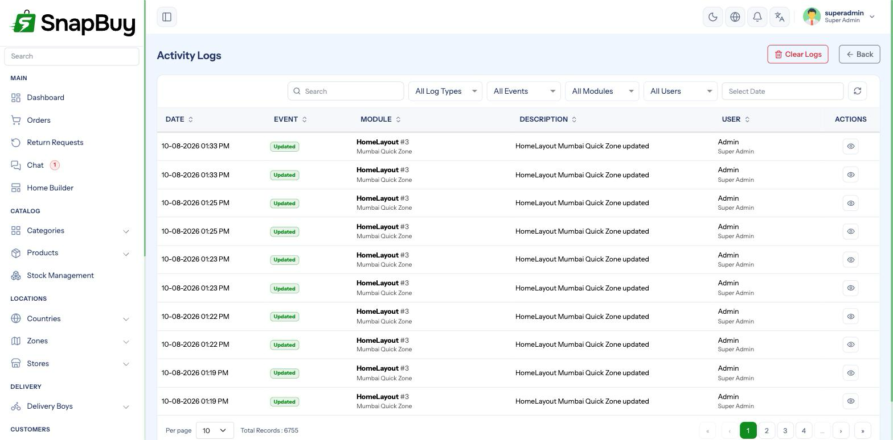

Activity Logs
Menu path: Settings → Activity Logs
An audit trail of what changed in the panel, who changed it, and when.

What is recorded
SnapBuy logs create, update and delete actions on the records that matter — products, orders, stores, zones, countries, home layouts, promo codes, staff users and settings.
Each entry shows:
| Column | Meaning |
|---|---|
| User | Which admin or staff account acted |
| Action | Created, updated or deleted |
| Record | What was affected |
| Changes | Which fields changed, and their old and new values |
| Timestamp | When |
What it is for
The three questions activity logs answer
- "Who changed this price?" — before an argument becomes a guess
- "When did this stop working?" — line the timestamp up against a settings change
- "Did that staff member do what they say they did?" — for genuine disputes
Most operational mysteries in a busy store are answered here faster than anywhere else.
A worked example: customers report wrong delivery charges starting Tuesday afternoon. Filter the log to zone changes, find the edit at 2:15 PM Tuesday, see exactly which field moved and who moved it, and revert it.
Filtering
Narrow by user, action type, record type and date range. Use it before scrolling — a busy store generates a lot of entries.
Limits worth knowing
Not everything is logged
The log covers admin panel activity. It is not a record of customer actions, API traffic, or changes made directly in the database. If someone edits a value with phpMyAdmin, nothing appears here.
Deleting the record does not delete its history
Log entries survive the deletion of what they describe, which is the point — but it also means the log holds values from records that no longer exist.
Growth and retention
Activity logs grow continuously and are one of the larger tables in a mature installation.
Watch the table size on shared hosting
If your database is approaching its hosting quota, activity logs are usually a large share of it. Archive old entries to a separate table or export and prune them, rather than letting the database hit its limit — which fails writes across the whole application, not just logging.
Access control
Restrict activity log access
The log shows what changed and who changed it, including edits to settings and pricing. Grant it only to roles that genuinely need oversight, and never to a role that could be tempted to use it to cover its own tracks. See Roles & Permissions.
Related diagnostics
| Tool | Shows |
|---|---|
| Activity Logs | Business changes made by people |
/logs (Laravel log viewer) | Application errors and stack traces |
| Cron Jobs | Whether scheduled work is running, and queue health |
/logs is unauthenticated
The Laravel log viewer sits outside the panel login and can reveal file paths and error detail. Restrict it by IP — see Server Setup.
Troubleshooting
| Symptom | Cause | Fix |
|---|---|---|
| A change is not in the log | Made directly in the database, or on an untracked model | Nothing to recover — check database backups |
| Log empty | No qualifying activity yet, or filters too narrow | Clear the filters |
| Page slow to load | Very large table | Filter by date; archive old entries |
| Staff can see logs they should not | Role permission too broad | Tighten the role |